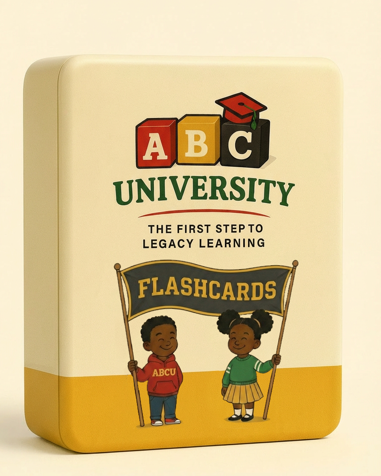
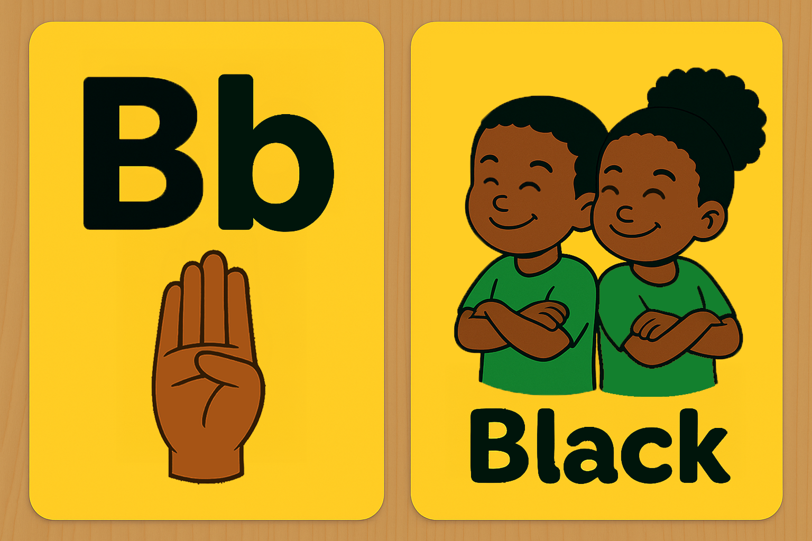
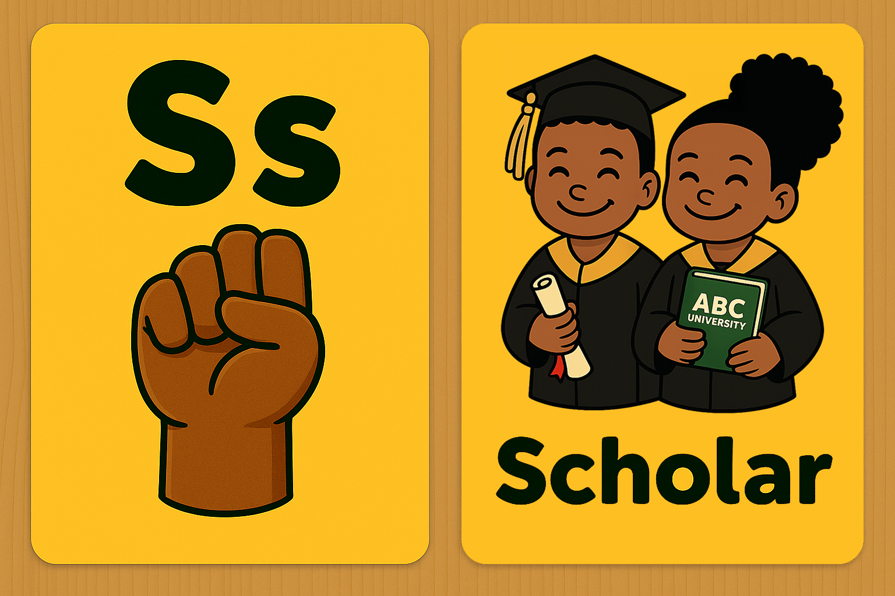

ABC UNIVERSITY
Parent Instruction Packet
The First Step to Legacy Learning

A two-week guide for using culturally grounded alphabet cards to support early learning, ASL exposure, and joyful child-led development.
Focus Group: Inaugural 2026
Welcome

Thank you for joining the ABCU Flashcard Focus Group. You are helping us test early versions of a culturally grounded alphabet card set designed to support early literacy, ASL exposure, and identity-affirming early learning.
Your participation helps us refine: Cultural representation, illustration clarity, ASL hand-shape accuracy, child-led engagement, and parent usability. This packet explains everything you will do during the two-week study.
Table of Contents
01. General Expectations & Routines
02. Week 1: Exploration & First Impressions
03. Week 2: Preference & Retention
04. Appendix A: The ABCU Method
05. Appendix B: Full Study Aim & Research
06. Appendix C: Troubleshooting Guide
07. Optional Tracking Sheet
General Expectations
✔ Choose ONE Routine
Select whichever rhythm works best for your home. Sessions may be broken into smaller chunks throughout the day. Stop immediately if your child becomes overstimulated.
- Path 1: 5 minutes per day for 7 days, OR
- Path 2: 10 minutes, 3 times per week
Note: Sessions do not have to be consecutive. Age differences can dictate session length; 10 minutes or 5 minute sessions can be split between the beginning, middle, and end of the day.
✔ The Gold Standard: Use the ABCU Method
Regardless of which Path you choose below, always use the 7-Step ABCU Method (see Appendix A) for every session. This ensures consistency for the study and the best learning results for your child.
✔ Deliverables & Media
Complete the Week 1 & Week 2 Surveys to qualify for incentives. You may optionally submit 10–30 second videos or photos. Your child’s identity will never be shared publicly without written consent.
Week 1: Exploration & Discovery
Primary Goal: To introduce all 26 cards in a low-pressure, curious environment. We are measuring "Initial Resonance"—which visuals naturally draw your child's eye?
Path 1: The Daily Routine
- Day 1: Introduce Cards A–E.
- Day 2: Introduce Cards F–J.
- Day 3: Introduce Cards K–O.
- Day 4: Introduce Cards P–T.
- Day 5: Introduce Cards U–Z.
- Day 6: "The Big Shuffle" (Browse all).
- Day 7: Identify Top 5 Favorites.
Path 2: The Block Routine
- Session 1: Introduce Cards A–M. Spend 1-2 minutes per card. DO NOT stress completion.
- Session 2: Introduce Cards N–Z. Once again, DO NOT stress completion. Allow child-led exploration.
- Session 3: Review all 26 cards. Observe which ones the child reaches for first.
- End of Week: Identify Top 5 Favorites.
What to Observe (The "Three Pillars"):
1. Visual Fixation
Does the child stare at specific cards (e.g., "Melanin" or "Scholar") longer than others?
2. Vocal/Manual Mimicry
Do they attempt to move their fingers when you show the ASL sign, or make a sound when you say the word?
3. Situated Interest
Does the child try to relate the card to themselves (e.g., pointing to their own skin when seeing "Melanin")?
Step 1 Complete?
Please complete the Week 1 Survey before starting Week 2.
TAKE WEEK 1 SURVEY
Week 2: Deep Engagement & Retention
Primary Goal: Using the Top 5 Favorites identified in Week 1, we observe how repetition leads to confidence and "Preference Stability."
The Week 2 Strategy
Instead of introducing new cards, we prioritize the child's "Core Set." This builds a sense of mastery and ownership over the learning process.
Path 1 Schedule
- Mon–Wed: Focus exclusively on Top 5 using the ABCU Method.
- Thu–Fri: Natural Observation: Which of the 5 do they grab first?.
- Weekend: Final review of all cards & Child-led free play.
Path 2 Schedule
- Session 1: ABCU Method with Top 5 + observe hand-shape improvement.
- Session 2: Natural Observation + record excitement levels.
- Session 3: Final review of all cards; confirm Top 5.
Advanced Observations:
Anticipatory Response
Does the child start to make the ASL hand-shape *before* you show them the back of the card?
Emotional Connection
Does the child show signs of "Joyful Learning" (clapping, laughing, or "hugging" the card) when their favorite is revealed?
Note: By the end of Week 2, please ensure you have notes for the Final Survey regarding which cards produced the highest level of engagement.
Study Finalized?
Please complete the Final Week 2 Survey to qualify for focus group incentives.
TAKE WEEK 2 SURVEY
Appendix A: The ABCU Method

Follow these steps every time to ensure consistency and correct ASL exposure:
1. Hold the Card UpLet your child explore the illustration first. Pause for visual exploration.
2. Say the Letter ClearlyUse a warm tone. Example: “A.”
3. Sign the ASL LetterMatch the hand-shape shown. Exposure is enough; no correction needed.
4. Flip the Card SlowlyAllow them to anticipate the reveal.
5. Letter + WordExample: “S… Scholar.” Natural voice; no drilling.
6. Sign the Letter AgainReinforces kinesthetic memory.
7. Hand the Card OverAllow child-led exploration through touch and holding.
Appendix B: Full Study Aim & Objectives

Study Aim
The ABCU Flashcard Study investigates the intersection of culturally grounded pedagogy and multimodal early literacy. Specifically, we aim to evaluate how children (ages 1–5) engage with materials that integrate visual illustrations of the African diaspora, spoken English, and American Sign Language (ASL) letter signs. The study seeks to determine if identity-affirming visuals combined with kinesthetic gesture-input accelerate emotional connnection and letter-form retention.
Theoretical Framework & Significance
1. Multimodal Encoding (Mayer, 2009): Cognitive Load Theory suggests that dual-channel input (visual + auditory) enhances memory. By adding a third kinesthetic channel (ASL), ABCU leverages "action-based" learning to strengthen neural pathways for letter recognition.
2. Gestural Scaffolding (Goldin-Meadow, 2014): Gestures serve as a bridge between thought and speech. ASL exposure during phonological development provides a physical anchor for abstract sounds.
3. Culturally Sustaining Pedagogy (Paris & Alim, 2017; Muhammad, 2020): Materials that reflect a child's heritage—such as 'Melanin' or 'Jazz'—increase "situated interest," leading to deeper cognitive engagement and positive self-concept.
Research Objectives
Objective 1: Early Literacy Behaviors: Quantitative assessment of letter recognition, vocabulary expansion, and phonetic attempts in a home-based environment.
Objective 2: Kinesthetic Engagement: Evaluating the frequency and accuracy of ASL hand-shape mimicry and its role in reducing learning frustration.
Objective 3: Cultural Motivation: Tracking "Preference Stability"—determining if identity-affirming visuals lead to higher repeat-engagement compared to traditional alphabet stimuli.
Objective 4: Parent-as-Educator Usability: Analyzing the feasibility of the ABCU Method within diverse family schedules to refine the instructional prototype.
APA References
Capone Singleton, N. (2017). Vocabulary development and gestures. Child Development Research, 2017, 1–8.
Daniels, M. (2004). Happy hands: The effect of ASL on hearing children’s literacy. Reading Research and Instruction, 44(1), 86–100.
Goldin-Meadow, S. (2014). How gesture works to change our minds. Trends in Neurosciences, 37(10), 528–536.
Justice, L. M., et al. (2005). Scaffolding early literacy. Language, Speech, and Hearing Services in Schools, 36(2), 117–128.
Muhammad, G. (2020). Cultivating genius: An equity framework for culturally responsive literacy. Scholastic.
Paris, D., & Alim, H. S. (2017). Culturally sustaining pedagogies. Teachers College Press.
Sheridan, S. M., et al. (2011). Efficacy of the Getting Ready intervention. Early Childhood Education Journal, 38(3), 191–199.
Appendix C: Troubleshooting Guide
If they walk away: Try later with 1–2 cards. Forced participation creates negative associations.
If overwhelmed: Lower environmental stimulation. Simplify choices to only 2 cards.
If fixated on one card: This is a positive signal of "Situated Interest." Stay with it as long as they desire.
If they want all 26 cards: Allow curiosity to lead. Do not feel bound to the 5-card-limit if the child is thriving.
⚠️ SECURITY REMINDER
This is a PROTOTYPE deck. Please do not post the cards online, share photos of the cards publicly, or reproduce the materials. Thank you for protecting the integrity of the ABCU legacy.
Questions? 📧 abculegacy@gmail.com